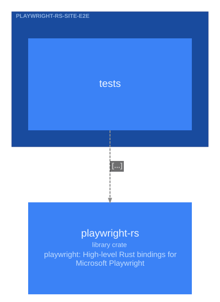

playwright-rs-site-e2e

Modules
tests playwright_rs_site_e2e.tests
Uses
| Kind | Target | Items | Technology |
|---|---|---|---|
| calls | playwright_rs.assertions | expect, expect_page | |
| constructs | playwright_rs.protocol.aria_snapshot | AriaSnapshotOptions | |
| names | playwright_rs.protocol.browser | Browser | |
| constructs | playwright_rs.protocol.browser_context.options | Viewport | |
| constructs | playwright_rs.protocol.har_options | StartHarOptions | |
| names | playwright_rs.protocol.page | Page | |
| calls | playwright_rs.protocol.playwright | Playwright | |
| constructs | playwright_rs.protocol.screencast | ActionCursor, ScreencastStartOptions, ShowActionsOptions | |
| constructs | playwright_rs.protocol.screenshot | Animations, ScreenshotOptions | |
| constructs | playwright_rs.protocol.tracing | TracingStartOptions, TracingStopOptions |